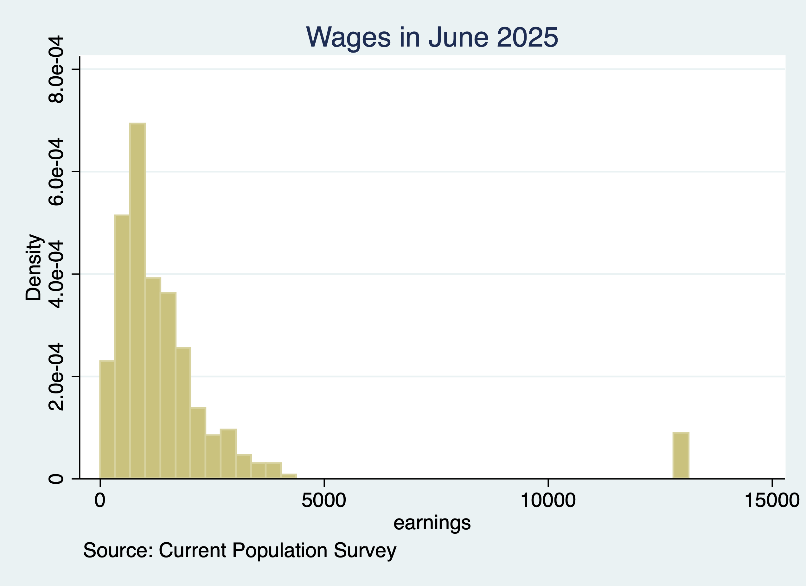

Chapter 3 Automate Graphs and Figures
Stata makes saving graphs easy, so if there is a minor fix all you need to do is rerun the scripts and have your graph fixed. Use the graph export command to save a graph.
*Get CPS Data
use jun25pub.dta
gen earnings=pternwa/100 if prerelg==1
histogram earnings if prerelg==1, title("Wages in June 2025") caption("Source: Current Population Survey")
graph export "Wages_June_2025.png"/Users/Sam/Desktop/Econ 645/Data/CPS
(28,617 missing values generated)
Variable | Obs Mean Std. Dev. Min Max
-------------+---------------------------------------------------------
earnings | 9,939 1596.086 2184.658 0 13145.81
(bin=39, start=0, width=337.07205)
option replace not allowed
r(198);
r(198);
Wages Histogram